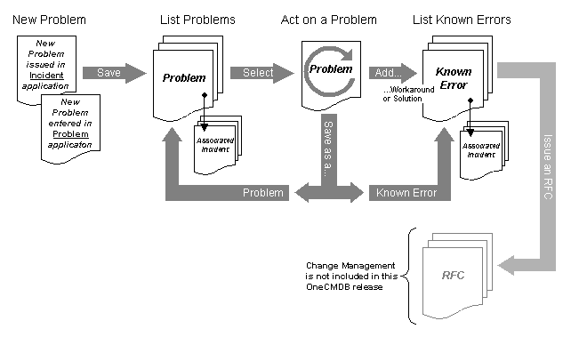

The basic workflow in the application is shown here:

Each Problem/Known Error is stored in the CMDB as an Instance (an object, just like a CI). A Problem instance describes a certain problem in the infrastructure. A Problem may be changed into a Known Error when a solution or workaround is known. Each Problem/Known Error instance has an attribute named Status with the possible values Problem or Known Error. The status attribute is used for separating Problems from Known Errors. In addition, a Known Error instance, must have the attribute named Solution/Workaround filled in.
A new Problem can either be created in the Incident Management Application, or in the Problem Management Application. A Known Error can only be created in the latter application.
When a user (typically a support person or technician) is working with a Problem he/she can document actions taken with Action Notes (comments). The Action Notes are stored in the CMDB and referenced from the corresponding Problem. They can be viewed as an Action History. When a solution or workaround to the Problem is found, this can be documented and the instance is saved as a Known Error.
When working with a certain Problem or Known Error the user can view all Incidents that are associated with it . He/she can also alter these associations..
Next step would be a possibility to forward Known Errors as RFC:s (Request for Change) to a Change Management application. This is however not part of this OneCMDB release.